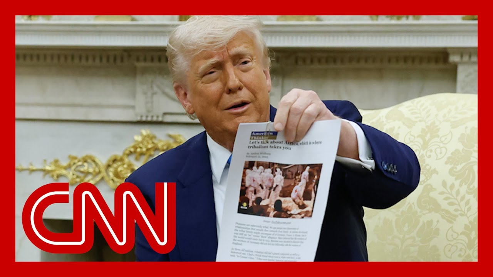

【特朗普展示的“白人农民”尸体照片来自刚果，而非南非】
Summary: Donald Trump incorrectly used an image from Congo as evidence of white farmer killings in South Africa during a meeting with South Africa's president.
摘要： 唐纳德·特朗普在与南非总统会晤时，错误地使用了一张来自刚果的照片作为南非白人农民遭杀害的证据。

⏱️ Estimated Reading Time: 14 min
On to new fallout now from Donald Trump's contentious Oval Office meeting with South Africa's president earlier this week.
现在来看唐纳德·特朗普本周早些时候与南非总统在椭圆形办公室的争议性会晤引发的新余波。
During that meeting, President Trump held up some printouts of news articles and images that he claimed were evidence of a genocide against white South Africans.
在那次会晤中，特朗普总统展示了一些新闻文章和图片的打印件，声称这些是南非白人遭受种族灭绝的证据。
Well, as Reuters reports, one of the images is actually from Reuters video of a mass burial in the Democratic Republic of Congo.
然而，据路透社报道，其中一张图片实际上来自路透社关于刚果民主共和国一场大规模埋葬的视频。
It does not depict that white farmers in South Africa, as Mr. Trump and the white House claimed, in front of the South African president and in front of journalists and the white in the white House.
这张图片并未如特朗普和白宫所声称的那样描绘南非的白人农民，而这一说法是在南非总统、记者和白宫工作人员面前提出的。
For more now, let's go to CNN's Larry Meadow, joining us from Nairobi in Kenya.
更多详情，让我们连线CNN的拉里·梅多，他从肯尼亚的内罗毕加入我们。
This Congo confusion.
这场刚果的混淆。
Larry, how are people where you are reacting to it?
拉里，你所在地区的人们对此有何反应？
It is shocking to a lot of people because, as I said after that meeting, based on my own reporting in this region, and especially from 15 years in South Africa, a lot of what President Trump used to justify this persecution and murders of white farmers was just untrue.
这让许多人感到震惊，因为正如我在那次会晤后所说，根据我在该地区的报道经验，尤其是15年在南非的经历，特朗普总统用来证明白人农民遭受迫害和谋杀的许多说法都是不真实的。
And this is another evidence.
这又是一个证据。
When I saw him hold up that picture, I thought it looked familiar.
当我看到他举起那张照片时，我觉得它看起来很眼熟。
We now know, and Reuters is confirming that this picture of body bags is not from South Africa.
我们现在知道，路透社也证实，这张尸袋的照片并非来自南非。
It's actually from the Democratic Republic of Congo.
它实际上来自刚果民主共和国。
It's from a mass burial in from a mass burial in Goma in the Democratic Republic of Congo on February 3rd.
它来自2月3日在刚果民主共和国戈马市举行的一场大规模埋葬。
And the Reuters video journalist Jaafar al-Khattab, who took that video, was surprised to see the president hold up that picture.
拍摄这段视频的路透社视频记者贾法尔·哈塔布对总统举起这张照片感到惊讶。
It's a screengrab that links to a Reuters video from that day.
这是当天路透社视频的截图。
It follows a big assault on that Goma city in the eastern DRC by rebels named M23.
此前，名为M23的叛军对刚果东部戈马市发动了一次大规模袭击。
And that was the effect a lot of people were killed on that day, in the days before, and this was a mass burial that was carried out by the International Committee of the Red cross.
结果是当天及前几天许多人被杀，这是由红十字国际委员会进行的大规模埋葬。
And Reuters was the only news organization that were allowed in to film that.
路透社是唯一获准拍摄此事的新闻机构。
So this picture does not depict the deaths of white farmers in South Africa as President Trump led President Ramaphosa to believe.
因此，这张照片并未如特朗普总统让拉马福萨总统相信的那样描绘南非白人农民的死亡。
And the wider question, the point that President Trump was trying to make here is that lots of farmers in South Africa are getting killed or getting executed, even though he used evidence that does not support that.
更广泛的问题是，特朗普总统试图在此表达的观点是，南非许多农民正在被杀害或处决，尽管他使用的证据并不支持这一点。
That picture was from an American conservative online magazine that had talked about both Goma, the Democratic Republic of Congo and South Africa, and the South African foreign minister was on Amanpour last night, and he brought some statistics with him.
这张照片来自一家美国保守派网络杂志，该杂志曾讨论过戈马、刚果民主共和国和南非，南非外长昨晚在《阿曼普尔》节目中带来了一些统计数据。
In the last four years to 125 farmer talks, 101 farm dwellers who are majority black, 55, farm owners who are majority white.
过去四年中，有125名农民遇害，其中101名是占多数的黑人农场居民，55名是占多数的白人农场主。
So that is a period of four years.
这是四年期间的数据。
And that does not represent a genocide.
这并不构成种族灭绝。
And but it is still unfortunate it will need to happen.
但不幸的是，这种情况仍然会发生。
because any crime, it is a crime.
因为任何犯罪都是犯罪。
And that's why the president then stated that we are dealing with the crime situation.
这就是为什么总统随后表示我们正在处理犯罪问题。
And that is the argument the South Africans are trying to make in the Oval Office.
这是南非人试图在椭圆形办公室提出的论点。
They have a crime problem, not a murder of farmers.
他们面临的是犯罪问题，而非农民谋杀问题。
In fact, farm murders.
事实上，农场谋杀案。
Last year, when we looked at it, 0.2% of the overall total, a small percentage.
去年我们查看时，农场谋杀案占总谋杀案的0.2%，比例很小。
Yeah, we've been here before.
是的，我们以前也遇到过这种情况。
Donald Trump and his press folks using material out of context so we can now add South Africa to the list.
唐纳德·特朗普和他的新闻团队断章取义地使用材料，现在我们可以把南非加入这个名单了。
Larry Mandela, thank you so much for your reporting.
拉里·曼德拉，非常感谢你的报道。
More on that contentious meeting between South African President Cyril Ramaphosa and President Trump from yesterday afternoon.
更多关于昨天下午南非总统西里尔·拉马福萨与特朗普总统之间争议性会晤的详情。
You'll remember the white House played a video purporting to back up claims that Afrikaners in South Africa are victims of genocide.
你会记得白宫播放了一段视频，声称支持南非荷兰裔白人遭受种族灭绝的说法。
Mr. Trump showed a video of crosses lining the side of a road, claiming it was a burial site of murdered white farmers.
特朗普先生展示了一段路边排列着十字架的视频，声称这是被谋杀的白人农民的埋葬地点。
It wasn't.
事实并非如此。
Today, white House press Secretary Carolyn Leavitt was pressed about it.
今天，白宫新闻秘书卡罗琳·莱维特对此受到追问。
Pressed about the video by NBC reporter Yamiche Alcindor, the president showed a video that he said showed more than a thousand burial sites of white South Africans who he said were murdered.
在NBC记者亚米奇·阿尔辛多追问这段视频时，总统展示了一段视频，称其显示了一千多个被谋杀的南非白人的埋葬地点。
We know that that was not true and that the video wasn't to.
我们知道这不是真的，视频也不是这样。
And that's why I wonder, why did the president choose to show that it's not?
这就是为什么我想知道，总统为什么要展示这段不实的视频？
The video was showing a burial site.
视频显示的是一个埋葬地点。
It's unsubstantiated that that's the case.
这一点未经证实。
No, it's it's true that that video showed the crosses that represent what the president claimed.
不，视频确实显示了总统声称的十字架。
The the video showed images of crosses in South Africa about white farmers who have been killed and politically persecuted because of the color of their skin.
视频显示了南非的十字架图像，这些十字架代表因肤色而被杀害和政治迫害的白人农民。
And those crosses are representing their lives.
这些十字架代表着他们的生命。
Those crosses And in the fact that they are now dead and their government did nothing about it.
这些十字架以及他们现在已经死亡而政府对此无所作为的事实。
Are you disputing that there is no fact that the video showed what the president claimed it showed, because it did not show that, but even more.
你是否在质疑视频并未显示总统声称的内容，因为它并未显示这些，甚至更多？
What I'm asking you is who at the white House show that the white cross is representing people who have perished because of racial persecution.
我问你的是，白宫中是谁表明这些白色十字架代表因种族迫害而丧生的人。
The video that the president shows, and what protocols are in place when there's unsubstantiated information being put out for the world and world leaders push what's on substantiated about the video.
总统展示的视频，以及当未经证实的信息被发布给全世界，世界领导人推动关于视频的未经证实的内容时，有哪些协议在起作用。
The video shows crosses that represent the dead bodies of people who were racially persecuted by their government.
视频显示了代表被政府种族迫害致死者的十字架。
In fact, the Associated Press, of all places, has a picture of that very monument in the caption from the Associated Press is each cross marks a white farmer who has been killed in a farm murder.
事实上，美联社有一张该纪念碑的照片，其图注是“每个十字架标志着一个在农场谋杀案中被杀害的白人农民”。
So it is substantiated.
因此这是有根据的。
But it's not just by that video and the physical evidence that everybody saw on display in the Oval Office, but also by another outlet in this from the Associated Press.
但这不仅是因为那段视频和椭圆形办公室中展示的物证，还因为美联社的另一篇报道。
So you should take it up with them if you believe the claim is unsubstantiated.
因此，如果你认为这一说法未经证实，你应该与他们交涉。
And that's a ridiculous line of questioning.
这是一种荒谬的提问方式。
Well, keeping them honest, it's not what President Trump said yesterday.
好吧，为了保持诚实，这不是特朗普总统昨天所说的。
Let's listen to what he actually said.
让我们听听他实际说了什么。
These are burial sites right here.
这些就是埋葬地点。
Burial sites.
埋葬地点。
Over a thousand of white farmers.
一千多名白人农民。
And those cars are lined up to pay love on a Sunday morning.
那些汽车在周日早晨排队表达敬意。
Each one of those white things you see is across and is approximately a thousand of them.
你看到的每一个白色物体都是一个十字架，大约有一千个。
They're all white farmers.
他们都是白人农民。
The family of white farmers.
白人农民的家庭。
And those cars aren't driving there.
那些汽车不是开往那里。
Stop there to pay respects to their family member who was killed.
停下来向他们被杀害的家庭成员表示敬意。
and it's a terrible sight.
这是一幅可怕的景象。
I've never seen anything like it.
我从未见过这样的景象。
Those people were all killed.
那些人全都被杀害了。
Have they told you where that is, Mr. president?
总统先生，他们告诉过你那是在哪里吗？
No.
没有。
I'd like to know where that is.
我想知道那是在哪里。
Because this I've never seen.
因为我从未见过。
I don't know, kind of.
我不知道，有点。
It's in South Africa.
在南非。
Well, the South African president there at the end asking where the burial site is because he'd never seen it.
好吧，南非总统最后问埋葬地点在哪里，因为他从未见过。
It's because it does not exist.
因为它并不存在。
It's not a burial ground.
这不是一个埋葬地。
It's video from five years ago of a vigil created after a white farming couple was robbed and murdered.
这是五年前的一段视频，记录了一对白人农民夫妇被抢劫和谋杀后举行的守夜活动。
That was a tragedy as as any murder.
这是一场悲剧，如同任何谋杀一样。
And the people actually who killed them were convicted of it.
实际上杀害他们的人已被定罪。
It was not ignored.
这并未被忽视。
The killing shook the Afrikaner community, and a neighbor of the couple erected the crosses to honor them and other farmers who had been killed across South Africa.
这起谋杀震惊了南非荷兰裔社区，这对夫妇的一位邻居竖立了十字架以纪念他们和南非各地被杀害的其他农民。
It's not a burial site, he told the BBC today.
他今天告诉BBC，这不是一个埋葬地点。
The person who made this memorial, it was a memorial.
制作这个纪念碑的人表示，这是一个纪念碑。
It was not a permanent memorial that was erected.
这不是一个永久性的纪念碑。
It was a temporary memorial.
这是一个临时纪念碑。
Now, in addition to the claim of a burial ground, there was an article that President Trump held up as further proof of genocide of white farmers in South Africa.
现在，除了关于埋葬地点的说法外，还有一篇文章被特朗普总统作为南非白人农民遭受种族灭绝的进一步证据。
There all these are all white farmers that are being buried.
所有这些被埋葬的都是白人农民。
Well, we tracked down the source of the image in that article, and it's actually not from South Africa.
好吧，我们追踪了文章中图片的来源，它实际上并非来自南非。
It is a screengrab of Reuters video from Goma in the Democratic Republic of Congo, and was from February, when over 2000 people were killed in clashes between the government and a rebel group.
这是路透社关于刚果民主共和国戈马市视频的截图，来自2月份，当时有2000多人在政府与叛军组织的冲突中丧生。
Now, the sick irony is that none of the black people fleeing violence or persecution in DRC, Congo or anywhere else in Africa would be allowed into the United States right now as refugees.
现在，讽刺的是，刚果民主共和国、刚果或非洲其他任何地方逃离暴力或迫害的黑人目前都不被允许作为难民进入美国。
Only white Afrikaners based on claims of a genocide which is not actually occurring.
只有基于并未实际发生的种族灭绝说法的白人荷兰裔才能进入。